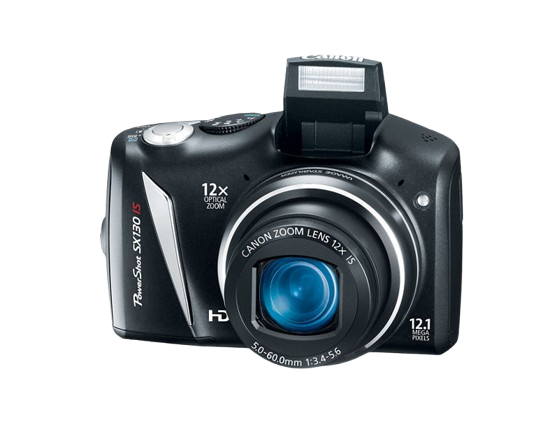

Maggie's Digital Photo Album
About Me!
Hi! I'm Maggie and I made this website to show off my digital camera photos! Over the summer I got gifted 2 old cameras from my aunt and I've had a lot of fun using them. Feel free to check out some of the photos I've taken in the gallery or try a camera yourself with the camera simulator!
My Cameras
Canon PowerShot SD780
This is my easier to use and more portable camera. It's quite beaten up though and barely works 50% of the time. However, it does produce really nice photos and is fun to take places.

Canon PowerShot SX130
This camera is lot larger and less portable. It does work a lot more smoothly though, so a majority of my photos are taken with it. The only major issue with it is that it decides all photos are from 1980 regardless of the date.
